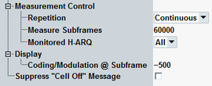

The "Measurement Control" parameters configure the scope of the measurement. In addition, the "Cell Off" message display is configurable.
See also: "Statistical Settings"

Defines how often the measurement is repeated if it is not stopped explicitly or by a failed limit check.
- Continuous: The measurement is continued until it is explicitly terminated. The results are periodically updated.
- Single-Shot: The measurement is stopped after one statistics cycle.
Single-shot is preferable if only a single measurement result is required under fixed conditions, which is typical for remote-controlled measurements. Continuous mode is suitable for monitoring the evolution of the measurement results in time and observe how they depend on the measurement configuration, which is typically done in manual control. The reset/preset values therefore differ from each other.
Defines the number of HSDPA subframes (transmission packets) to be measured per measurement cycle (statistics cycle). Only subframes scheduled for the UE are counted.
Specify a multiple of 100 subframes.
See also: "Statistical Results"
Selects either a single H-ARQ process (numbered 0 to 7) to be monitored or specifies that all processes are to be monitored.
Selecting a single process extends the measurement duration because only a part of the transmitted subframes is measured. For fast production tests, it is recommended to monitor all processes.
Remote command:Select the subframe No. for the display of details on detected coding and modulation. The displayed information is in the right lower area of HSDPA ACK pane. This parameter is also configurable via a hotkey, see "Related hotkeys".
Refer to "Suppress "Cell Off" Message".